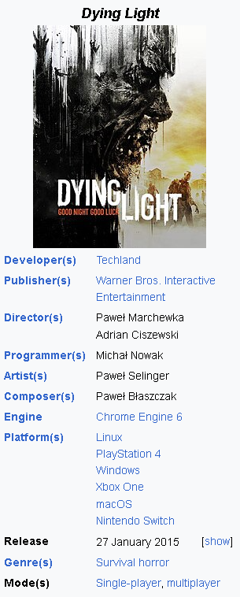
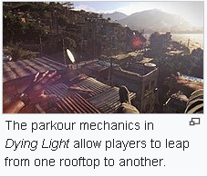

Dying Light

Dying Light is a 2015 survival horror video game developed by
Techland and published by Warner Bros. Interactive
Entertainment. The game's story follows undercover agent
Kyle Crane who is sent to infiltrate a quarantine zone in
a fictional Middle Eastern city called Harran. It
features an enemy-infested, open world city with a
dynamic day–night cycle, in which zombies are slow and
clumsy during daytime and extremely aggressive at
night. The gameplay is focused on weapons-based
combat and parkour, allowing players to choose fight
or flight when presented with dangers. The game also
features an asymmetrical multiplayer mode
(originally set to be a pre-order bonus), and a
four-player co-operative multiplayer mode.
The development of the game began in early 2012, after the
team completed the development of Dead Island. The game's
parkour system emphasizes natural movement, and David Belle,
the pioneer of parkour, was invited to serve as a consultant
for the game. To implement that, Techland had to abandon
most of the story elements and construct them again from
scratch. To create a story that would suit the taste of the
American audience, the writing team collaborated with Dan
Jolley. The story was inspired by both Heart of Darkness
and The Plague. Announced in May 2013, it was released in
January 2015 for Linux, PlayStation 4, Windows, and Xbox
One. The game was planned to be released on PlayStation 3
and Xbox 360, but these versions were cancelled due to
hardware limitations.
At release, Dying Light received mixed reviews from critics,
with praise mainly directed at the combat, graphics,
co-operative multiplayer, navigation and the day–night
cycle, while receiving criticism regarding the story,
difficulty, and technical issues. The game was a commercial
success, breaking the record for first-month sales of a new
survival horror intellectual property and selling 20 million
units by April 2022. Techland committed to supporting the
game, and released downloadable content packs, content drops
and free updates for the game several years after the
initial launch. An expansion, titled Dying Light: The
Following, was released in February 2016. The sequel, Dying
Light 2 Stay Human, was released in February 2022. A
standalone game titled Dying Light: The Beast, which follows
Kyle Crane thirteen years after the events of the original
game, will be released in mid 2025.
Gameplay

Dying Light is a survival horror video game played from a
first-person perspective. The game is set in an open world
environment called Harran; initially, an area named the
Slums can be freely explored, later adding a second area,
accessible via sewers, called Old Town.[1] Players traverse
this urban environment, which is overrun by zombies. There
is an emphasis on parkour mechanics, which allow players to
perform actions such as climbing ledges, leaping from edges,
sliding, jumping between roofs and zip-lining.[2] A
grappling hook allows players to climb up buildings and
quickly travel between places.[3] As players explore the
game's world, they can scavenge supplies and loot, which
can be used to craft new weapons or sold to vendors. The
player character can utilise his "survivor sense" to
identify all nearby loot and use lock picks to open locked
chests and locked vehicles. Players can also complete
various side missions by accepting tasks issued by the
non-playable characters in the game's safe zones.[4] As
players explore Harran, they can also pick up various
collectibles such as notes and journals, and listen to voice
mail recordings.[5]
Dying Light contains a dynamic day–night cycle. During the
day, players can set traps, save random survivors, and make
their way to airdrops. The infected are slow, apathetic, and
easily visible and they can be easily avoided.[6] Players
can use environmental traps, such as spikes, electrified
fences, and gas tanks, to kill the infected.[7][8] At night,
the infected transform to become much more dangerous.
Without daylight, the senses of the infected become more
acute and accurate. They can sprint after the player
character, inflict more damage, and gain the ability to
jump and climb buildings. For players to avoid contact,
they need to use their "survivor sense" to locate and avoid
the infected.[9] If the player character is spotted, they
can use distractions and traps to reduce the number of
infected. Players' main defence against the infected is
ultraviolet light, which slows their movement.[10] At
safehouses, players can adjust the time of day, skipping
night altogether if the player does not feel ready.[4]
The game features a variety of enemies, including the slow,
low-level Biters, Bombers which explode when the player
character gets too close, Virals which can run quickly,
and dangerous Volatiles which only appear at night.[11]
The majority of the game's combat utilises melee weapons,
with more than 100 weapons and over 1500 weapon
possibilities through crafting and customisation.[12] The
melee weapons have a limited lifespan and will become
degraded and broken if players use them in combat for a
long time. Players can repair a weapon a limited number of
times or dismantle it for parts. Crafting weapons requires
crafting ingredients, such as gauze and metal parts, and a
blueprint, which can be scavenged or purchased from a shop.
[4] In the second half of the game, players can use ranged
firearms: two types of assault rifles and a variety of
small firearms and shotguns. Firearms do not break or
degrade, but ammunition is generally scarce and the sound
from them will attract enemies.[4] Weapons are categorised
into different rarities, which are indicated by a weapon's
colour.[11] Players can utilise other items such as
firecrackers, which distract enemies, and explosives like
molotov cocktails, to aid combat.[4] In addition, parkour
mechanics are integrated with combat.[13]
The player character's combat efficiency is governed by his
health, fitness and stamina. When players take damage, he
will lose health, which can be replenished when Crane
utilises a medkit or consumes food.[11] Fitness governs his
free running endurance, while stamina focuses on how fast
Crane becomes tired in combat.[14] A variety of actions in
Dying Light can help players to earn experience points.
Engaging in combat with enemies will help players to earn
power points, while performing parkour movement can earn
agility points. Completing missions, challenges, and quests
will help players to earn survival points. As players earn
experience, they can spend skill points to select new
skills from a skill tree. Experience points are boosted
when players explore at night, and while survival points
are deducted if killed during the day, there is no such
penalty at night.[4][8]
The game features a four-player cooperative multiplayer mode
which allows players to explore Harran and complete the
campaign together.[15] Players can complete cooperative
challenges for experience, such as fighting to kill as many
infected as possible and racing against each other to an
airdrop.[16] A multiplayer feature included is a game mode
known as "Be the Zombie" that allows the player to play as a
particularly strong and fast infected mutant called the
"Night Hunter" and invade other players' servers. The
players who are playing as humans are tasked with destroying
the infected nests and surviving attacks performed by the
Night Hunter, while the Night Hunter's goal is to deplete
the players' collective life pool and therefore prevent them
from attacking the nests.[17]